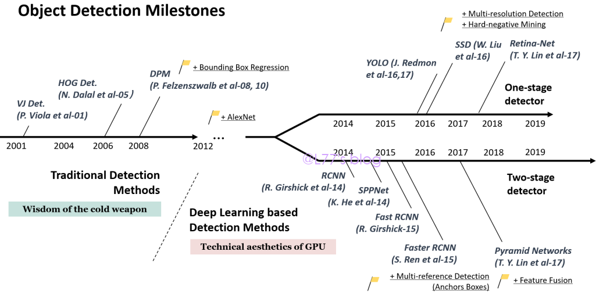
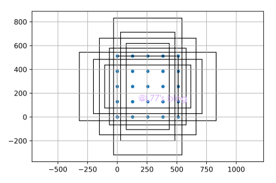
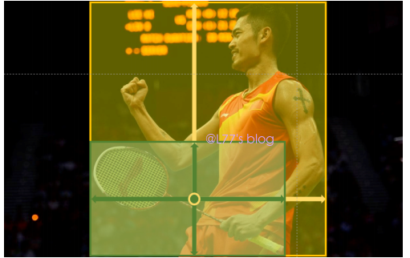
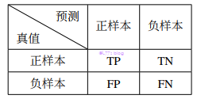
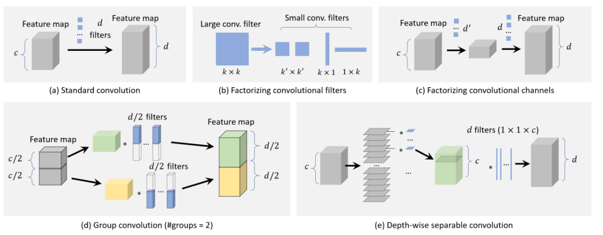
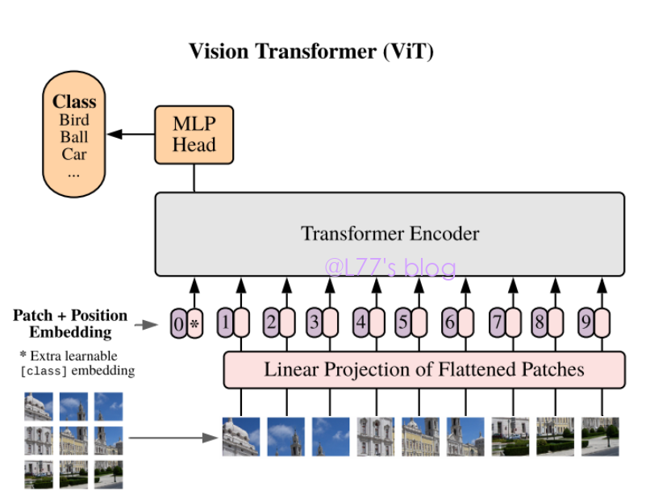
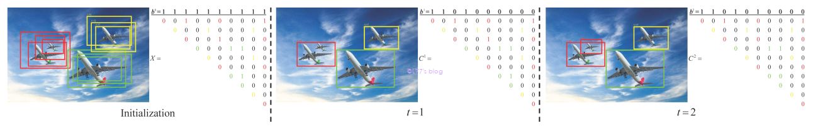

简介
目标检测一直以来就是计算机视觉中十分重要的任务，其主要是为了解决图片中所感兴趣目标的位置和类别的问题。在获取到目标信息之后，可以辅助其他计算机视觉任务，如：分割、跟踪和姿态估计等解决相应的问题。其实际应用也具有重大价值，比如无人驾驶、机器人视觉以及人脸识别等。在国防领域，目标检测可以结合光学高分遥感图像对地进行检测、使用无人机进行低损失的精准打击。实际上各国都对 AI 在增强国防实力、情报收集以及致命武器的研究十分重视。
目标检测发展现状
从图像的角度来说，目标检测可以分为两大分支：自然图像的目标检测与卫星图像的目标检测。但是由于自然图像应用更加广泛，所以一般具有代表性的目标检测算法都是针对于自然图像进行研究的。
♣ 自然图像的目标检测

从上图可知，自然图像的目标检测发展主要分为两个发展历程：基于传统计算机视觉的目标检测发展阶段与基于深度学习的目标检测发展阶段。前者主要是靠人工设计的特征提取方法来设计算法，但是这种做法需要十分丰富的经验才能有较好的效果。即便如此，在一些情况仍然缺乏有效的图像表达。像 Haar-like 特征、SIFT 算子、HOG 特征及 LBP 特征等都是经典的人工设计特征提取算子。另外有一些经典的目标检测算法也是对后来的发展有所影响。
Viola Jones (VJ) Detectors
2001 年，P. Viola 和 M. Jones 已经实现了人脸的实时识别，而且不受到其它的约束条件。它的思路挺简单的：通过滑窗来检查每一个位置是否有目标来进行检测。VJ 检测器在相同的检测精度的情况下，比其他算法快十甚至上百倍。其主要靠积分图、特征选取和联级检测来改善速度的。（积分图到现在都广泛使用）
Histogram of Oriented Gradients (HOG)
HOG 保证了几何与光学特征的不变性，在目标检测领域也是常用的算法。其将图像分割成小的连接区域 (cells)，每个 cell 生成一个方向的梯度直方图，通过这些直方图的组合来表示所有检测目标的描述子。另外，它还通过局部直方图（即计算一个较大区域的光强来归一化这个区域也叫 block 的所有 cells）。这提升了 HOG 的准确率，降低了几何与光学形变的影响。
Deformable Part-based Model (DPM)
DPM 是 HOG 的延续，获得 VOC2008 至 VOC2009 的冠军，也是当时最优秀的目标检测算法。DPM 遵循分而治之的思路，训练过程是如何对检测物体分解的学习，推理则是对物体解剖结果的综合。 就像汽车可以认为是车窗、车轮和车身等组成，这些也就成了判断是否是车的重要依据，这部分也被称为”star model”。虽然 DPM 已经被后来的算法远远超越，但是其提出的难例挖掘、边界框回归等依然在后续算法中发挥着作用。
随着硬件水平的提升，更多研究者把注意力放到了基于深度学习的目标检测算法研究上了。深度学习方向的目标检测根据检测的过程主要分为两条支线发展：两阶段的目标检测器和单阶段的目标检测器。
两阶段的目标检测器
在手工特征的性能达到饱和，目标检测在2010后进入了瓶颈。然而，同时世界见证了卷积神经网络重生后的学习鲁棒性以及高层语义特征的表达能力。目标检测开始以前所未有的速度进行发展了。
the Regions with CNN features (RCNN)
R.Girshick 于 2014 提出 RCNN，其思路并不复杂：它先通过选择搜索提取一系列的建议区域。然后每一个建议区域会被 resize 到一个固定的尺寸送入 CNN 模型之中（其是在 ImageNet 中进行预训练的）提取特征。最后，通过线性的 SVM 分类器对每个区域目标的存在性进行判断，并识别其类别。RCNN 在 VOC07 上的 mAP 由 $33.7\%$ (DPM-v5) 上升到 $58.5\%$。虽然 RCNN 的取得了巨大的进步，但是仍然有明显的缺陷：大量重叠区域冗余的特征的计算以致检测速度十分慢。
Spatial Pyramid Pooling Networks (SPPNet)
同年，何凯明大佬提出了 SPPNet。之前的 CNN 模型需要一个固定尺寸的输入，SPPNet 的主要贡献在于引入了 Spatial Pyramid Pooling (SPP) layer，其可以使 CNN 在不需要关注输入的尺寸，并产生一个固定长度的特征图。当 SPPNet 进行目标检测的时候，特征图能由最初的输入一次计算获得，然后生成任意区域的固定长度的特征表达，这样的做法避免了重复计算卷积过后的特征。SPPNet 在没有精度损失的情况下，比 RCNN 快了20倍。SPPNet 存在的问题在于：训练仍然是多阶段的，SPPNet 只 fine-tune 了其全连接层，同时忽略了之前所有的层。
Fast RCNN
2015 年，Fast RCNN 顾名思义是 RCNN 的加速版，它使训练检测器和 bounding box 的回归在同一个网络下进行，其在 VOC07 的表现为：比 RCNN 快200倍的同时，mAP 由 $58.5\%$ 提升至 $70.0\%$。虽然Fast RCNN 整合了 RCNN 和 SPPNet 所有的优点，但它在建议区域的生成上仍有进步的空间。
Faster RCNN
Faster RCNN 的主 要贡献在于其提出了 Region Proposal Network(RPN)，使得建议区域的生成也由神经网络来完成。使得建议区域的生成、特征的提取和边界框的回归统一到一个网络框架中。
Feature Pyramid Networks(FPN)
2017年在 Faster RCNN 基础之上， FPN 的提出使得定位更加精准。原因在于深层的特征图更容易表达高层语义，对种类的识别十分有益，但是对于目标的定位却用处不大。FPN 是一种自顶而下的结构，并带有横向的连接，以此来融合不同 level 的特征。FPN 对于检测尺度变化范围大的目标显现出了巨大的优势，其现在已经成为了许多新的检测器的基础模块了。
Cascade RCNN
2018 年 Cai 提出 Cascade RCNN 来解决 FasterRCNN 中训练时的分布与预测时分布存在差异的问题。它通过联级结构中设置逐渐提高的阈值来使得两者的分布保持一致。
单阶段的目标检测器
两阶段的目标检测器虽然能够达到较高的精度，但是在检测速度上有些差强人意。在实际场景里的应用检测速度常常达不到要求。
You Only Look Once (YOLO)
YOLO 是由 R. Joseph 在 2015 年提出的，也是深度学习时代第一个单阶段检测器。YOLO 检测速度非常的快：其中较快的版本可在 VOC07 精度 $52.7 \%$ 的情况下达到 155 FPS；增强版本在 FPS 为 45 的情况下，VOC07 的 mAP 达到 $63.4 \%$ 和 VOC12 的 mAP 达到 $57.9 \%$。从 YOLO 的名字便可得知，其摈弃了建议检测加上验证的方式，取而代之的是使用单个神经网络来检测。它将图片划分为一个一个网格，然后预测每个网格的 bounding boxes (bboxes)和概率。
Single Shot MultiBox Detector (SSD)
同年 W. Liu 提出了 SSD ，它是深度学习时代第二个单阶段检测器。SSD 的贡献在于使用多尺度和多特征检测技术，使用它们提高了单阶段检测器的检测精度，特别是对于小目标。SSD 与之前所有的检测器的区别在于：前者在不同的层检测不同尺度的目标，后者只在最高层检测。
RetinaNet
尽管一阶段检测器保有较快的速度，然而在精度上一直落后于两阶段的检测器。T.-Y. Lin 发现了背后的原因，并在 2017 年提出了 RetinaNet。他认为密集检测器在训练时遇到的前景和背景类别极度的不均衡是主要原因，并提出了 Focal Loss 来使检测器更多关注难的、易分错的样本。这使得单阶段的检测器的精度追上了两阶段的检测器。
YOLOv2-YOLOv5
YOLO 系列一直以来都是单阶段目标检测算法的发展主线。继 YOLOv1 之后，YOLOv2 引入了先验框 (anchor boxes)，并使用 k-means 来根据数据集制定先验框的尺寸。采用多尺度训练，适应不同分辨率的图像进行预测。
2018 年，R.Joseph 对其改进得到了 YOLOv3，对 backbone 和 neck 进行了改进，也对采样和损失函数等方面进行调整。使得在结果与 RetinaNet 保持一致的情况下，速度快近四倍。
2020 年，Alexey 接过承担 YOLO 系列开发的重任，提出的 YOLOv4 可以看作是对当时深度学习技巧的综合。使用了包括但是不限于 CutMix、Mosaic 数据增强、DropBlock、Mish 激活函数和 DIoU-NMS 等。对比 YOLOv3 在 mAP 和 FPS 上分别提升了 10% 和 12%，同年 Ultralytics 公司也根据 YOLOv3 发布了 YOLOv5，其更易于部署，在正负样本定义和 loss 计算方面进行了改进。
2021 年，Scaled YOLOv4 被提出，其主要对 neck 进行了 CSP 化，并且可以在基础网络上对深度、宽度和分辨率进行统一缩放。Ge 在 YOLOx 中对 YOLO 进行检测头的解耦、使用了 Copypaste 等数据增强技巧，将 OTA 简化为 SimOTA，极大缩短了训练时间。
FCOS
想提一下 FCOS，这里介绍的其他单阶段检测器都是 anchor-based 的，FCOS 算是有代表性的 anchor-free 目标检测算法。其使用的网络框架基本都是 RetinaNet 的，我觉得它最大的贡献之一在于指出了目标检测算法存在的训练和预测不一致性问题，也受到了研究者的持续关注。
♠ 遥感图像的目标检测
遥感图像也分为基于传统计算机视觉算法的目标检测和深度学习算法的目标检测。通过边缘检测例如：Canny 算子、Log 算子以及 Roberts 算子。另外像通过像素值来进行设计各种分割的算法也是十分常用的，例如：阈值法、迭代阈值分割法以及分水岭分割法等。 最后就是基于显著性的算法，例如：LC 算法、SR 算法以及 ITTI 算法等。但这种方法在背景比较复杂的情况时，效果就不那么好了。
随着自然图像的目标检测算法转向了深度学习，遥感图像也开始用深度学习的方法进行研究，一般是基于自然图像的目标检测模型进行适应性改进得到的。作为遥感图像中的某些特点而言：目标尺度大、密集分布以及任意朝向等特点，使用旋转框进行检测成为了该领域的一大特色。所以我主要介绍一下这方面，关于旋转框检测我主要看杨学大佬的论文偏多（应该是他所有的论文我都看过）。相对于自然场景的目标检测算法，这部分看的比较散。
2017 年 Ma 等人在论文《Arbitrary-oriented scene text detection via rotation proposals》中使用了旋转候选框来提取场景文字的特征，这给遥感图像领域提供了新思路。同年，Liu 等人在论文《Rotated region based cnn for ship detection》中同样使用旋转池化区域来检测船舶。Liu L 提出DRBox 的网络结构处理任意朝向的问题，并对比了水平框和旋转框检测遥感图像的优劣。2019 年 Yang 提出了 SCRDet ，SF-Net 通过特征融合和 anchor 采样来解决小目标检测问题；MDA-Net 进行实例级去噪；为了解决角度的周期性问题和边的可互换性问题（边界问题），增加了 IoU 常数因子。2020 年，Yang 提出了 Circular Smooth Label (CSL) 将角度的回归转化为了分类问题，避免了边界问题。2021 年，Yang 在《Rethinking Rotated Object Detection with Gaussian Wasserstein Distance Loss》中使用了高斯分布来对旋转框建模，并使用推土机距离来刻画预测分布与真实分布的距离。但是由于推土机距离存在：检测中心位置偏移、水平情况损失退化等情况。他接着推出了 KL 散度来作为衡量两个框的距离并计算损失。至此，由预测的范围超出了理想的定义所导致的边界问题被解决，不得不说真的太强了。
目标检测发展到今天仍然有需要解决的问题和面对的挑战，包括但不限于：小目标检测、类别不均衡问题、密集场景检测问题以及检测加速问题等。
目标检测中的损失计算部分
目标检测的过程简单来说就是：数据的预处理 $\rightarrow$ 输入到网络 $\rightarrow$ 获得预测输出定义正负样本 $\rightarrow$ 计算损失 $\rightarrow$ 反向传播。本节主要就正负样本的定义和损失计算进行介绍。
♣ 常见的标签匹配
基于先验框的标签匹配
基于先验框 (anchor-based) 的目标检测网络，一般根据先验框与 Ground Truth (GT) 计算所得的 IoU 来进行标签匹配。首先它会先根据需要预测的特征图的尺寸来对原图像画格点 (anchor) ，并在格点上设置先验框，如下图所示：

标签匹配的步骤如下所示：
- 计算每一个先验框与所有 GT 的 IoU 值；
- 取先验框 a 计算所得最大的 IoU 值进行判断。如果该值大于预设的阈值，则定义为正样本，否则为负样本。
上述第二步中，可能存在某一个 GT 没有先验框跟它匹配并标为正样本的情况，这时候就没有可以学习该 GT 的样本了。这种情况一般出现在训练初期和 RPN 网络阶段，这时候需要进行低质量匹配，即把与该 GT 计算 IoU 最大的先验框作为该 GT 的正样本。不过，这种情况可能导致一个先验框成为多个 GT 的正样本的情况。
无先验框的标签匹配
无先验框 (anchor-free) 的目标检测网络，没有先验框的限制，正负样本定义比较多样。CenterNet 将 GT 的中心点落到特征热图的位置定义为正样本，其他位置为负样本。FCOS 则依然基于格点来定义正负样本，过程如下：
- 首先计算格点到 GT 四条边的距离，如果四个距离中的最大值在该特征图预测的范围，则进行下一步；
- 采用中心采样的策略：距离 GT 几何中心前后左右 d 之内的格点，定义为正样本点；
- 当一个网格点定义为多个 GT 正样本点的时候，则负责面积最小的 GT。
以上策略中，其实主要遵循两个准则：是否适合这个尺度的特征预测；是否更接近 GT 的几何中心。

结合以上两种算法的标签匹配
ATSS 以 RetinaNet 与 FCOS 为研究对象，结合基于先验框和无先验框的标签匹配进行正负样本的定义，过程如下：
- 计算 GT 与所有先验框几何中心的欧氏距离，针对每一个尺度的特征层选择距离最小的前 k 个先验框作为候选正样本；
- 然后计算 GT 与这些框的 IoU，统计这些 IoU 的均值和方差，将均值与方差的和作为筛选为这一步的正样本的阈值；
- 先验框的中心处于 GT 内则为正样本。如果先验框与多个 GT 都满足正样本的要求，则只作为 IoU 值最大的 GT 预测。
在原论文中，认为是否大于 IoU 的均值代表着先验框的是否适合该 GT 的预测，而 IoU 的方差是否高代表是否有某一特征层是否特别适合该 GT（方差越大越震荡，代表 IoU 有的大有的小）。
基于优化理论的标签匹配
OTA 使用最优运输原理来对标签进行匹配：GT 为供给方，先验框为需求方。每个 GT 可以给 k 个先验框提供标签，而一个先验框需要一个标签（正样本 or 负样本），GT 给先验框提供标签的时候需要付出代价，需要优化的是总体的代价最小，具体流程如下：
- 计算 GT 与所有 bboxes 的 IoU 值，计算前 q 个 IoU 值之和，取整作为 k 的估计值；
- GT 给每一个先验框匹配标签的代价使用分类损失和回归损失之和进行计算；
- 最优解通过 Sinkhorn-Knopp 进行迭代求解。
匈牙利算法经常用于端到端目标检测模型的正负样本定义，其对于每一个 GT 只会给一个预测框提供标签，同样不同 GT 给预测框提供标签的代价不同，一般这个代价也同 OTA 使用损失感知作为代价。由于是一对一匹配，所以不需要后处理。这两种方法都是从全局出发进行分配的，最后最优的方案是总的代价最小的情况。
目前常见的标签匹配就是上述所列的方法，其他的方法例如 YOLO 系列的标签匹配也是根据上述方法进行改进的，像《Prime Sample Attention in Object Detection》也是非常优秀的标签匹配方法，考虑了正样本和负样本的排序。正负样本定义这个领域是一个十分值得研究的方向，直接可能影响到模型学习的样本，从而影响最后的精度。
♠ 常见的损失函数
损失函数就像是深度学习算法的老师一样，也是模型最终的目标，因此损失函数的设计十分重要，影响模型的收敛速度与检测精度。
分类损失函数
分类损失最常用的是交叉熵损失函数 (Cross Entropy Loss Function)。其是由 KL 散度推导而来的，用于衡量预测分布与真实分布的距离。公式如下：
$$
CE(y,p)=-\sum y\log p
$$
其中 $y$ 是该类别的标签，$p$ 是预测的概率值。这一般用于多类别分类，搭配 softmax 激活函数使用。对于二分类问题上式可以，变换为：
$$
BCE(y,p)=-y\log p - (1-y)\log (1-p)
$$
二分类一般使用 sigmoid 激活函数使用。当 BCE 用于多分类的时候，只在该类或背景类两个类别之间判断。
之后的损失函数的改进基本基于 CE 进行改进，分类损失函数主要还是针对正负样本的不均衡问题进行研究的。如单阶段网络没有 RPN 进行筛选高质量框，导致负样本远远大于正样本，而我们更希望模型关注正样本的学习，在 RetinaNet 中使用了 Focal Loss 解决这个问题：
$$
FL(y,p)=-(\alpha (1-p)^{\gamma}y\log p - (1-\alpha)p^{\gamma}(1-y)\log (1-p))
$$
FL 认为正负样本的不均衡来源于难易样本的不均衡。负样本虽然易分类，单个损失低，但是数量庞大，导致整体损失不容忽视。然而模型不应该去关注它们的学习，而是应该去关注困难样本。公式中使用 $(1-p)^{\gamma}$ 来控制，对于正样本而言， $p$ 越接近于 1，代表这个样本越容易分类，此时 $(1-p)^{\gamma}$ 便越小，用于调整其损失的所占比例。
在论文《Gradient Harmonized Single-stage Detector》中，CE 对未经激活函数的输入进行求导，可得：
$$
\frac{\partial Loss}{\partial x} =
\begin{cases}
p - 1,\quad if \quad p^{*} = 1 \\\
p,\qquad if \quad p^{*} = 0
\end{cases}
$$
GHM 发现越是易分类的样本，梯度贡献也越小。而对于有些样本梯度过大，模型难以学习到它们的特征，并认为这些样本时离群样本没有必要花太多力气去学习。为了解决上述的梯度分布不均匀的问题，作者提出了一种均衡化的策略。大概的思路是对于梯度分布切bin，统计每一个bin内的样本数量，得到每个bin的分布，进行分布的均衡化。具体地，基于这个bin内的样本数量和这个bin的长度，可以定义梯度密度，它表示某个单位区间内样本的数量，定义 $g$ 为梯度的模:
$$
GD(g) = \frac{1}{l_{\epsilon}(g)} \sum^N_{k=1} \delta_{\epsilon}(g_{k}, g) \\\
\delta_{\epsilon} (g_{k}, g) =
\begin{cases}
1,\quad if \quad g - \frac{\epsilon}{2} \le g_k \le g + \frac{\epsilon}{2} \\\
0,\quad otherwise
\end{cases}
$$
以上式子计算了所有样本中落入以梯度 $g$ 为中心的区间并除以区间长度归一化。
$$
\beta_i = \frac{1}{GD(g_i)/N}
$$
其使用了除以 N 进行归一化，使之称为第 i 个样本的梯度密度函数。最后 loss 如下计算，思想为落入该样本区间的样本数量越多权重越小。
$$
GHM = \frac{1}{N} \sum^N_{i=1} \beta_i L_{CE}(p_i, p^{*}_i) = \sum^{N}_{i=1} \frac{L_{CE}(p_i,p^{*}_i)}{GD(g_i)}
$$
上述的时间复杂度过高，对每个样本的 g 都要遍历一次所有样本。于是作者将 0 - 1 分为 $M=\frac{1}{\epsilon}$ 个区间，事先统计每个区间的样本数量，然后作为梯度密度函数。到时候只需要查询梯度在哪个区间即可，便可以得到 $\beta_i$。原文对回归损失函数也做了梯度均衡。
Equalized Focal Loss 认为 FL 只考虑到了正样本和负样本的不均衡，但是对于现实很多情况是长尾分布，有些类别出现的次数远远大于其他类别，因此需要进行类别间的均衡（正样本）：
$$
EFL(p)=-\sum^{C}_{j=1}\alpha_t \left(\frac{\gamma_b + \gamma^j_v}{\gamma_b}\right)(1-p_j)^{\gamma_b + \gamma^j_v} \log(p_j)
$$
其中 $\gamma_b$ 设置为常数 2，$\gamma^j_v=s(1-g^j)$ ，$s$ 设置为 8，$g^j$ 是该类别的正样本梯度累积与负样本累积的比值。对于 $g^j$ 的理解：如果该类别在图像中出现，则必定有一个正样本（位置）会贡献一次正样本的梯度，反之则贡献负样本梯度。如果该类别正负样本失衡越严重，那么 $g^j$ 就会越小，$\gamma_b + \gamma^j_v$ 就越大，以此来缓解不均衡的情况，而前面的权重是不想牺牲过多困难少量样本的 loss。这里其实与 $(1-p_j)^{\gamma_b + \gamma^j_v}$ 的效果刚好相反，我觉得这个设置比较奇怪。
Generalized Focal Loss 则是针对单阶段网络训练和预测的不一致问题（训练分类和回归分开训练，但是预测却使用分数进行排序，没有考虑到框的回归质量）对 FL 改进：
$$
QFL(y,\sigma) = -|y-\sigma|^{\beta}((1-y)\log (1-\sigma)+y\log (\sigma))
$$
这里使用的标签 $y$ 是该样本与 GT 的 IoU 值与该样本的类别标签乘积，这时候预测的分数同时兼顾了分类分数和回归质量。
回归损失函数
对于回归损失函数而言，L1 和 L2 损失函数最早使用，但都各有优缺点。L1 函数的优缺点为：
- 优点： 梯度值固定、对离群样本不敏感（没有平方，不会梯度爆炸）
- 缺点： 收敛处会不断震荡
L2 损失函数的优缺点在于：
- 优点： 随着收敛梯度值变小，收敛稳定
- 缺点：对离群样本敏感，对损失有放大作用
smooth L1 函数则是兼顾了两者的优点，去除了两者的缺点，公式如下：
$$
Loss_{smoothl1} = \frac{1}{N}\sum_{i=0}^N
\begin{cases}
\frac{0.5(c_{ti}-c_{bi})^2}{\beta},\quad if \ |c_{ti}-c_{bi}|<\beta, \\\
|c_{ti}-c_{bi}| - 0.5\times \beta, otherwise
\end{cases}
$$
其中 $N$ 代表样本的总数量，$c_{ti}$ 代表真值框的相关坐标值，$c_{bi}$ 代表 bounding box 的相关坐标值，$\beta$ 是超参数。
但是这样的损失函数与最后的模型评价方式都具有一定的差距，因此提出了 IoU 损失函数，计算公式如下：
$$
Loss_{iou} = 1 - \frac{|T \cup B|}{|T \cap B|}
$$
上式后面一项是 IoU 的计算公式，其中 $T$ 代表真值框，$B$ 代表 bounding box。由上式可知，IoU 计算了两个框的交并比，也代表了两个框的重合度。当两个框重合度越大时，损失越小。但如果两个框完全没有重合度时，该损失的梯度值将变为 0 即梯度消失，不能进行正常回归。GIoU 的提出能够避免这一问题，具体公式如下：
$$
Loss_{giou} = 1 - IoU+\frac{|A_c - U|}{|A_c|}
$$
其中 $A_c$ 代表真值框与 bounding box 的最小外接矩形，$U$ 代表真值框与 bounding box 的并集。由上式可知，即便当两个框完全没有交集时，也会产生梯度使得模型对该样本的学习能够正常进行。
当然后续的发展还有 CIoU、DIoU 及 AP 等回归损失函数，都是针对以上损失函数中的缺陷发展而来的。
目标检测数据集及衡量指标
♣ 常见的目标检测数据集
自然图像数据集
Pascal VOC 数据集为目标识别提供了一套标准化的图像集，并且开源了数据集的标签，能够使用不同的评估和比较结果方法。曾举办在 2005 到 2012 年举办 Pascal VOC Challenges 的 VOC 系列比赛。Pascal VOC 数据集从最开始的只有 4 个类别、2209 张图片以及只包含检测和分类两种标注发展到 2012 年的包含 20 个类别，训练和验证季一共 11530 张图像，包含 27450 个标注检测区域和 6929 个分割区域，并且标注了行为识别和关键点检测等，是一套十分全面而又完整的数据集。
COCO 是一个由微软发布的大范围目标检测、分割以及图像理解的数据集。COCO 数据集有着 330000 张的图像（其中有 200000 进行了标注），包含 150 万个实例目标，总共囊括了 80 个类别，对 250000 个人进行了关键点标注。COCO 目标检测任务将200000张图像分为训练集118000 张、验证集5000 张和测试集41000张。所有的图像都进行了标注（其中包括 500000 个实例被进行分割标注），其中训练集和验证集的图像和标注是对外进行公开的，测试集只公开了图像。
遥感图像数据集
DIOR 数据集是一个大范围、数量巨大的遥感目标检测数据集。数据集一共包含 23463 张图像和 192472 个实例，一共覆盖了 20 种类别。NWPU VHR-10数据集是一个卫星图像目标检测常用的数据集之一，数据总量为800张。这些图像都是由专家手动标注 Google Earth 和 Vaihingen 数据集中裁剪而来的图像组成的。并且整个数据集包含了遥感图像中常见的飞机、轮船、储罐和棒球场等十类目标。DOTA 数据集是一个种类多、数据量大并用于遥感图像目标检测的数据集，其中的图像都是从不同途径获得的。一般被用于研究和评估在航空图像上应用的目标检测算法。图像的尺寸从 800 到20000像素不等，一般需要根据研究者自己的算法进行裁剪，并且图像内的目标也具有多种尺度、朝向以及形状。
♠ 常见的目标检测评价方法
目前最常见的目标检测评价方法分为 Pascal VOC 与 COCO 评价标准。在这两种评价标准之前，先介绍一些参与评价的计算量，首先 True Positive (TP), True Negative (TN), False Positive (FP), False Negative (FN) 的定义如下表所示：

据此可以计算正确率 (Accuracy) 公式如下：
$$
Accuracy = \frac{TP+TN}{TP+TN+FP+FN}
$$
查准率 (Precision) 公式如下：
$$
Precision= \frac{TP}{TP+FP}
$$
召回率 (Recall) 公式如下：
$$
Recall = \frac{TP}{TP+FN}
$$
VOC评价标准
Pascal VOC 评价方法通过计算平均精确度 (Average Precision AP) 来计算平均 AP 值 (mean Average Precision mAP) 作为算法性能的评价指标。定义 $TP_i$ 为第 $i$ 样本计算 AP 时的 $TP$ 值，$FP_i$ 同理。其类别 $A$ 的 AP 计算过程如下：
- 对类别 $A$ 所有图像的 $n$ 个预测结果按照分数从大到小进行降序排列；
- 取出上述排列中排在第 $i$ 个预测结果 $(i = 0, 1,\dots, n)$ 与其所在图像的所有 GT 进行计算 IoU 值；
- 若该预测结果与该图像所有 GT 计算 IoU 中的最大值大于阈值（一般为 0.5）且对应 GT 之前没有被预测结果匹配过，则将其作为该 GT 的预测结果 $TP_i = TP_{i-1} + 1, FP_i = FP_{i-1}$。否则 $TP_i = TP_{i-1}, FP_i = FP_{i-1} + 1$；
- 根据公式计算前$i$个检测结果时的查准率和召回率，$i = i + 1$；
- 若 $i < n$，返回步骤 2。当 $i = n$ 时有 $n$ 个查准率和 $n$ 个召回率，以 $n$ 个查准率为纵坐标值，$n$ 个召回率为横坐标值，并形成 $n$ 个坐标。将 $n$ 个点连接起来绘制 PR (Precision Recall) 曲线，通过微分的方式计算 PR 曲线下面的面积。
步骤 5 所得的面积值即为类别 A 的 AP 值，计算所有类别的 AP 值之和除以类别数的结果为 Pascal VOC 最后评估结果 mAP。
COCO评价标准
COCO 评价方法与 Pascal VOC 基本思想一致，都是基于 AP 的评价方式，但是统计了更多数据量并计算了更详细的评价指标。COCO 对 GT 的尺寸 (size)进行了定义，其中面积在 $32 \times 32$ 以下的为小目标，面积在 $32 \times 32$ 到 $96 \times 96$ 的为中等目标，面积大于 $96 \times 96$ 的为大目标。并设置了每张图预测框最大数量 (maxDet)，一般设置了三个阈值：1，10 和 100。具体过程如下：
- 首先，统计第$i$张图像中类别 $c$ 的所有预测框。然后对框按分数进行降序排列，并只取排在前 $m$ 个框，其中 $m$ 为 maxDet 中的最大值；
- 对步骤 1 中保留的预测框，并在不同的 IoU 阈值下，按 GT 尺寸进行匹配，匹配过程参考 Pascal VOC 评价方式的步骤 2 与 3。对于匹配陈功的预测框，则记录在该情况下 GT 与预测框各自的序号；
- 重复步骤 1 与 2，直到所有图像的所有类别按不同 IoU 阈值和 GT 尺寸统计完成后，计算所有类在不同 IoU 阈值、不同 GT 尺寸和不同 maxDet 情况下的查准率与召回率；
- 根据 Pascal VOC 评价方式的步骤 5，计算当 maxDet=m 时，每一种 IoU 阈值下的所有尺寸 GT 参与评估的 mAP 并求平均值；记录上述情况 IoU 阈值等于 0.5 和 0.75 的 mAP 值；分别计算当GT 为小目标、中等目标或大目标且 maxDet=m 时，每一种 IoU 阈值下的mAP 并求平均值；计算 maxDet=1, 10 或 100 时，所有 IoU 及 GT 尺寸下的召回率平均值；计算 maxDet= 100 时，所有 IoU 及 GT 分别为小目标、中等目标、大目标的召回率平均值。
COCO 一共对模型的 12 类指标进行评价，因此更加全面（不过确实复杂）。
目标检测其他方面的发展
♣ 剪枝、量化与蒸馏
模型剪枝和网络量化使两种比较常见用于 CNN 模型加速的，前者使用于简化模型结构或者权重以达到减小它的规模的目的，后者指的是减小 activations or weights of the code-length。
- Network Pruning
最早进行模型剪枝研究是 Y.LeCun，他提出一种叫做”optimal brain damage”来压缩多层感知网络的参数。这种方法中的 loss 函数是由二阶导数近似计算得到的，达到去除一些不重要权重的目的。传统的模型剪枝简单地去掉一些不重要的权重，这样在 convolutional filter 中可能会引起一些 sparse connectivity patterns，因此不能直接用于压缩 CNN。一个简单解决这个问题的办法就是用独立的权重代替整个 filters。
- Network Quantification
最近对网络量化的研究关注点放在了网络的二值化上，其目的是将其 activations 和权重进行二值化（0或者1）以达到浮点数操作转为逻辑操作。这种方法能显著加快计算和减少网络的储存，因此可以轻松的用于移动设备之中。另外一种思路是用最小二乘法的二值化变量来近似计算卷积，想要更精确的话，则可以考虑使用多个二值卷积的线性组合进行逼近。此外，发展 GPU 对二值计算的加速也是有显著的提升效果。
- Network Distillation
知识蒸馏是一个将达巨型网络（“教师网络”）的知识压缩至较小网络（“学生网络”）的框架。最近这种思路已经被用于目标检测加速中了。比较直接的办法就是用教师网络“指导”学生网络的学习、训练（light-weight）让后者能够加速检测。另外一种方法，使 candidate region 得到转换以达到减小学生网络和教师网络的 features 距离。这使得在相同的精度下，得到两倍速度的提升。
♠ 模型的轻量化设计

如果将深度学习的算法应用到实际的工程中一直以来都是我们思考的问题，也是我们研究最终的目的之一。因此也出现很多经典的轻量级网络，例如，Inception 系列、MobileNet 系列、ShuffleNet 系列、EfficientDet 以及最出名的 YOLO 系列。他们在各自的网络提出了一些轻量级的技巧以此来到达轻量化的效果。
Factorizing Convolutions
Factorizing convolution 是最简单和直接建立轻量级模型的方法，其实也可以理解为卷积的分解。其中有两类方法：如上图 (b) 所示，将一个大的卷积核在空间维度分解为成一系列小的卷积核。比如，将$7 \times 7$ 的卷积核换成三个 $ 3 \times 3$ 卷积核，两种卷积核的感受野相同，但是后者参数量更小，其实这个最早在 VGG 中使用将 $5 \times 5$ 的卷积核分解为两个 $ 3 \times 3$ 的，后来在 Inception 系列中使用 $ 1 \times n$ 和 $ n \times 1$ 替换 $n \times n$ 的卷积核，其实这是一种把乘法换成加法的做法；如上图 (c) 所示，第二种方法则是将一大组的卷积在通道维度换为两小组卷积，通道数为 $d$ ，size 为 $k \times k$ 的卷积核对通道数为 $c$ 的特征图进行计算，替换为先用 $d^{‘}$ 维卷积核进行卷积，然后用一个非线性的激活函数进行激活，最后再用 $d$ 维的卷积核进行卷积。计算复杂度由 $\mathcal{O}(dck^2)$ 减小为 $\mathcal{O}(d^{‘}ck^2)+\mathcal{O}(dd^{‘})$。
分组卷积
如图 (d) 所示，如果我们会对输入进行按通道分组，每组输入的通道数为 $c/n$，每组的卷积核数量也变为 $d/n$。计算复杂度由 $\mathcal{O}(dk^2c)$ 减小为 $\mathcal{O}(\frac{c}{n}\frac{d}{n}nk^2)$。
深度可分离卷积
Depthwise separable convolution 由 MobileNet 系列提出。如上图 (e)，深度可分离卷积的第一步可以看作分组卷积的特殊情况，即组数等于通道数。假设我们有一层卷积核为 $d$ 维的卷积层和通道数为 $c$ 的特征图，每个卷积核的大小为 $k \times k$。对于深度可分离卷积每一个 $k \times k \times c$ 的卷积核分为了 $c$ 个 $k \times k \times 1$ 个卷积核，然后它们分别和特征图对应的每个通道进行卷积，最后再用 $1 \times 1$ 大小的卷积核进行通道的转换，最后的输出通道为 $d$ 维。计算量便由 $\mathcal{O}(dck^2)$ 变为 $\mathcal{O}(ck^2)+\mathcal{O}(dc)$。
Memory Access Cost (MAC)
ShuffleNet 从内存访问成本 (Memory Access Cost MAC) 出发证明了深度可分离卷积过多分组会导致 MAC 增加而速度下降，另外并推导了在输入输出通道相同的时候 MAC 最小，因此对网络进行了重新设计而加快了推理速度。不过在 GPU 环境中基本可以忽略不计，而对于类似 ARM 和 CPU 等硬件环境可能就需要考虑其影响了。
Neural Architecture Search (NAS)
使用网络结构搜索 (NAS) 而不是经验来自动地设计网络成为了一大热点。NAS 已经被成功应用到图像分类，目标检测和图像分割任务中了。因而，其表现出在设计轻量级网络有着较好地前景。
EffcientDet 与 Scaled YOLOv4 通过同时对模型深度、宽度以及分辨率进行放缩得到大体量模型以及轻量级模型。
♥ 目标检测的前沿
Vision Transformer (ViT)
End-to-End Object Detection with Transformers (DETR) 是 Facebook 在 2020 年提出的端到端模型，其使用自然语言处理的 Transformer 结构来解决视觉任务，里面使用了匈牙利算法进行一对一标签匹配，因此不需要 Non Maximum Suppression (NMS) 进行后处理，所以模型被称为端到端目标检测算法。这算是让我拍案叫绝的一篇论文！在此之后引起了两个领域的注意，一个是端到端算法的开发：后续的 deformable DETR、SparseRCNN 等；另一边就是继续想着如何将 Transformer 用于视觉任务，因为其实 Transformer 用于检测还是有很多问题的，比如：怎么多尺度预测、如何降低计算复杂度。另外 CNN 由于共享权重、各种空间不变性的特性使得特征的融合十分容易，ViT 有很大部分研究都是放在如何融合特征上，一般会输入将输入分成若干个 Patch，并利用 Transformer 强大的注意力机制进行学习：

这一点其实跟 MLP 做视觉任务有点像，最近 MLP 也是被掀起了一股复古风，大家都不拘泥于使用 CNN 的结构来解决视觉问题了，有种百家齐放的感觉，目前目标检测 COCO 榜最强的算法已经被一堆 Transformer 结构的算法霸占了，例如，Swin Transformer、DINO 等
Non-Maximum Suppression
非极大抑制是一种贪心算法，目前已经可以说是目标检测算法后处理的标配了，因此针对 NMS 的研究也挺多的。我们一般用的是 Hard-NMS，但是这在密集场景可能会抑制掉同类别的目标，因此提出了 Soft-NMS 其会减少超过阈值的预测框的分数。更多的是对 NMS 进行加速的改进，我们一般需要对分数降序排列的框逐一进行抑制。但这样的做法不适合并行的计算，Fast-NMS 和 Matrix-MNS 使用矩阵计算进行加速，可是其直接从上三角矩阵出发，可能导致过多抑制。

Cluster-NMS 在论文使用数学归纳法证明其使用矩阵计算最多使用 N 次迭代就能达到与原 NMS 相同的结果，其中 N 为图像中，冗余框最多一处框的个数。
Learning with Segmentation
Segmentation helps category recognition
在计算机视觉任务中，目标（人或者车）与 stuff （天空、水或者玻璃）的区别在于前者有封闭的、有定义的边界，而后者没有。作为分割任务的特征能很好的捕获目标的边界，其对分类有帮助。
Segmentation helps accurate localization
目标的真值框取决于它的边界，对于有些物体的形状比较特殊（比如猫有着长尾巴）。这样很难预测出较高的 IoU 定位，然而目标的边界能很好的编码进入分割之中，进一步帮助定位。
Segmentation can be embedded as context
利用分割的语义信息，可以帮助目标检测。比如，飞机更多可能是飞在天上，鱼儿更多可能是游在水中。
Learning with enriched features
最简单的方法就是将分割网络当做特征的提取，然后将其整合进入目标检测网络作为额外的特征。这种方法的优点在于它易于实施，缺点在于分割网络会带来额外的计算。
Learning with multi-task loss functions
另外一种方法就是添加一个分割的分支，然后用多任务的 loss 来训练网络。在大多数情况下，分割分支会被在推理阶段移除。这种方法的优点在于速度不会受到影响，缺点在于需要像素级的标签。最后，有些研究者使用弱监督学习，不使用像素级的标签而是使用 bounding box level 的标签。
Adversarial Training
The Generative Adversarial Networks (GAN)由 A.Goodfellow 在2014年提出后获得了巨大的关注。GAN 一般由两部分组成：生成器网络和辨别器网络，其进行互相博弈，并使用 minimax optimization 进行优化。生成器学习后将 latent space 映射到特定数据中感兴趣的分布，辨别器则是分辨、判断真实数据分布和生成器生成的数据。GAN 被广泛应用到许多计算机视觉的任务中，如图像生成、图像风格迁移以及图像超分等。最近两年，GAN 被应用到目标检测中以改善小目标和遮挡目标。
为了改善遮挡目标的检测，有一个思路为：用 adversarial training 生成遮挡的 mask，直接使特征去模仿遮挡。此外对抗攻击也引起了研究者的注意，这对像自动驾驶等领域十分重要，因为其在具有鲁棒性之前不能被真正应用到实际当中。
Weakly Supervised Object Detection
目标检测常常需要大量人工标注数据，然而标注数据的过程耗时、昂贵而且效率低。弱监督目标检测(WSOD)使用图片级的标注来替代这个问题。最近，实例学习被应用到 WSOD 中，使用一系列的标注包每一个含有多个实例来替换单独标注。如果我们认为在一张图片中的目标候选为一个包，并且图片级标注作为 label，那么 WSOD 就成为了多实例学习的过程。
一些其他的研究者认为 WSOD 是一种通过选择最重要的区域来建议排序的过程，然后在图片级标注上训练这些区域。另一个简单的方法是 WSOD 可以用来掩膜图片的不同部分，如果目标检测分数急速下降，目标便有着较高的概率。此外，在训练过程中，交互标注将人的反馈纳入考虑来改善 WSOD。最近，生成对抗训练也被应用到 WSOD 中。
我认为无监督或者弱监督学习一定是未来的方向，如果能实现模型的在线无监督学习，也许那时候就是真正的人工智能时代的全面来临！
Part From Object Detection in 20 Years
其实还有很多部分可能没有提到，没有提到的地方可能是我了解比较少的领域，以后再补充了。本文提到的算法都是目标检测经典的算法，作为这个研究领域的同学应该有所了解
To Be Continued~ 🍧🍧🍧